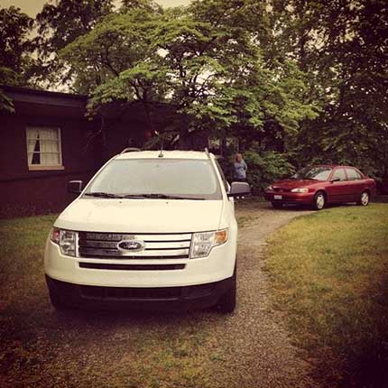
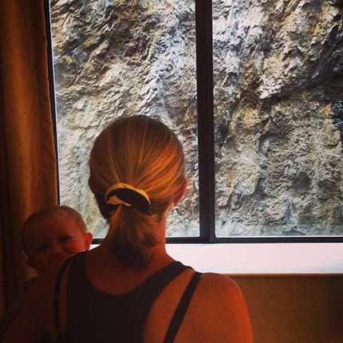
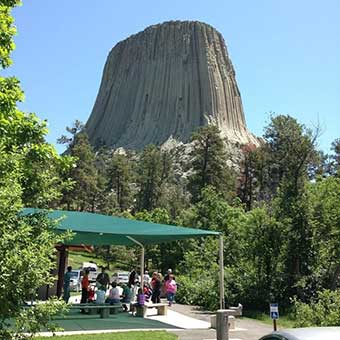
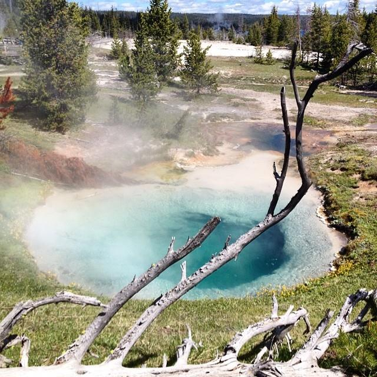
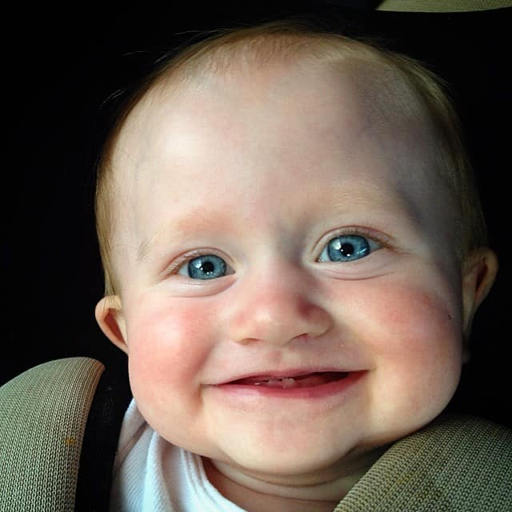
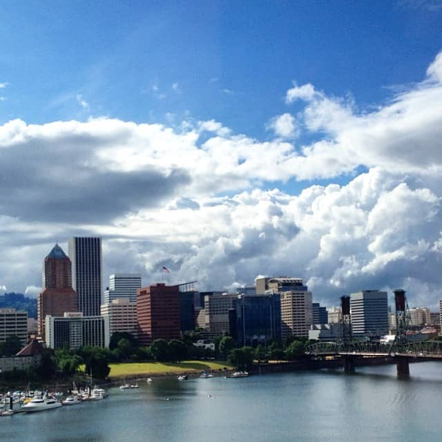

Photo Journey
On June 13th 2014, Iuliia, Olivia, and myself started our journey across the U.S landscape. The Ford Edge was packed tight, the baby was teething, and the open road called. We left from Bowling Green, OH at 7:30 am to start our trip to our first stop of the night in Des Moines, Iowa. The farthest I have driven west was Chicago, so this laid some new land for us to see. That land was, well, flat and endless.
There isn't too much to say about the first day. Indiana was corn, Illinois was more boring than I realized, and Iowa wasn't as flat as I thought it would be. One adjustment we had to make early on, and continued throughout the trip, was Iuliia sitting in the backseat with Olivia. A teething 7 month old does not like being left out of the conversation. The first day went by pretty quick. The first half of the drive was still familiar territory. We found ourselves at a Days Inn in West Des Moines with some chinese take-out, and an active fire alarm.
New Land
The second day brought us through the western half of Iowa, which was rainy and reminicent of Ireland. Beautiful green hills laid the landscape...until the border of Nebraska. Luckily we went north and into South Dakota, which had some promise ahead. The three things that described South Dakota that day were Corn Palace, Wall Drug, and Badlands. Seriously though, Wall Drug had a sign off of the highway every mile. Each sign promoted something different that they sold. Everything from light bulbs to copper-plated imitation Raoul Duke sunglasses. I went through the full grieving process while passing these endless signs for 300+ miles. We didn't even stop in to check the place out. I still wonder what lay behind those Wall Drug Walls. The day ended in the town of Keystone, with a beautiful view of the side of a mountain.
Day of the Landmarks
We started the day by beating the crowd to Mt. Rushmore. This was one of the best decisions we made during the trip. I had always heard that Mt. Rushmore was a pointless landmark to see, because you get the same experience from a picture. This is sort of true, but being there with no crowd made it a wonderful experience. We took some cool, Life magazine cover, pictures. We walked the trail that goes under the faces(which I am not sure most people know about). All in all it was worth it to see, but I would not recommend the trip just for Mt. Rushmore.
We decided to skip Crazy Horse Monument, so we could see Devil's Tower in Wyoming. First, let me say, Wyoming was breathtakingly beautiful. We went about 30 miles off of the main highway to find the unique rock formation. This was another landmark that is definitely better to see in person, rather than looking at a picture. We took a trail around the base of the Tower, and were rewarded with gorgeous views of the Wyoming landscape. We left Devil's Tower to our final destination for the night, the city of Cody. The trip brought us through the mountains, into a canyon, and across the wild west. We arrived that night at the Black Bear lodge, a ranch style hotel with free rodeos.
Yellowstone
Our fourth day on the road mostly consisted of Yellowstone. The fourth day was also my favorite. Driving the Yellowstone was the best experience I have ever had on the road. Except for when we saw a bear, but more on that in a little bit. We started early in the morning to beat the crowd. We came in through the lower east side, and immediately started driving high in the sky. It is always fun going from summer to snow in a matter of an hour. We came across Yellowstone Lake first. I never knew a lake could be so blue. I grew up on Lake Erie, which now has an algae problem, and is a deep shade of green. Yellowstone lake was pure. It was serene.
We continued our way to West Thumb. This began my only downfall for the time spent at Yellowstone. We finally caught up to all the other tourists in the area. I try not to be annoyed by how other people live their lives if it doesn't hurt or affect anyone else, but I couldn't this time. We pulled up and saw some of the wildlife eating leaves. I really wanted to enjoy the moment, but all I saw were people running up to them and only looking through their cameras. They snapped their photos and selfies, and went back to their cars to probably never look at the photos again. This was the trend everywhere. Walking with the camera out, and using the viewport as their new set of eyes. I just dont understand it all I suppose.
We went to Old Faithful, which was another anomaly for me to understand. Everybody knows Old Faithful, and it was certainly awesome to see, but definitely hyped up. There were active geysers all over, but since this was Old Faithful nobody seemed to care about the other geysers. The sound of Old Faithful was the sound of a couple hundred tablets and phones being raised in unison. Same story as before, everyone viewed the event through their camera and then left. Although, to be fair, I did see one guy who sat there and watched without anything in front of his face.
The hour started to become late, so we started heading out. That is when we almost got in a wreck because a bear was spotted off the side of the road. Everybody abandoned their cars in the middle of the road, and some in really deep ditches that will definitely need a towtruck to get them out. They got their pictures of the bear off in the distance, and I became more and more cynical of the whole time spent of Yellowstone. All I could think of was the tourists, which I also was apart of, but these "other" tourists didn't even appreciate where they were. Or maybe they did and I need to chill out about the whole thing. We continued our way though Yellowstone, and said goodbye on the Montana side.
Montana always seemed like an exotic state to me. When I imagined Montana, I pictured a cowboy riding his horse on the family ranch and gathering cattle. I wasn't too far off. The southern portion of Montana is beautiful, but barren and gray. We arrived that night in Missoula to end day four.
Final Push
The fifth and final day on the road started off in Missoula, Montana. I can't say that I didn't like Montana, but I was glad to get out of there. I did this weird thing in every state where I would go into a gas station and think to myself "So this is what people from [insert state name here] look like". A gas station probably wasn't the best place to judge the look of a whole state, or the idea of a whole state having a certain facial feature attributed to it, but that is what I picture now for each state. We ventured through northern Idaho. Not much to say except it was more green and mountainous than I thought it would be. We came into Washington from the north east. I have heard of the high desert, but I didn't know it reached that far north. I imagined Washington as evergreens and Starbucks, with a space needle thrown in there. It was the wild west. There were dust tornados, abandoned trains, and even tumbleweeds. Not much else about Washington, which had a fluid transtion into Oregon.
We crossed the Columbia River in Oregon and soon found our way in the Columbia River Gorge. This was the second best experience I ever had driving. I'm so happy to know that it isn't hard to go back to the gorge. We drove and drove, getting closer to Portland, when the skies turned black. We had nothing but sunshine the whole trip, until 30 miles outside of Portland. The rain came down and didn't stop for the next week. That didn't matter though. We were finally here!
The pictures in the gallery are what I feel are the best to portray the trip I described above. Enjoy.
